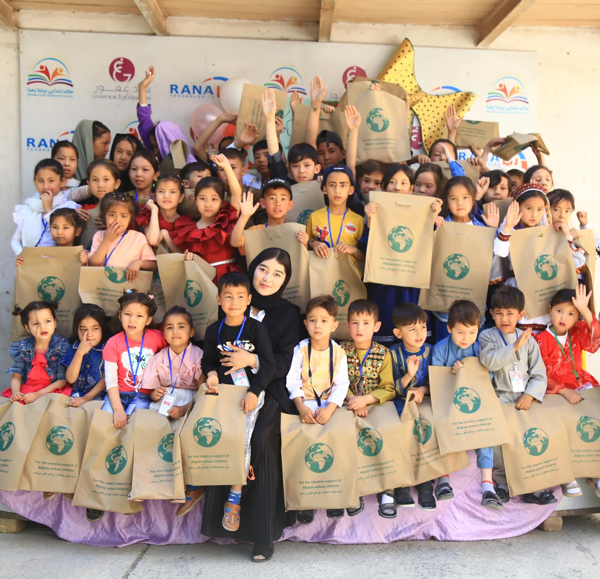

Education is a pathway to possibility.
We believe girls should have meaningful opportunities to learn, build skills, and participate in supportive communities.
Our Mission
Girls for Knowledge works to expand learning opportunities for girls and young women through education, skill-building, mentoring, and community engagement. We want every learner we reach to feel that her curiosity matters and that her future is worth investing in.
Our Story
Girls for Knowledge grew from a simple idea: when access to education becomes difficult, community can help keep learning alive. The initiative brings together people who care about education and creates practical opportunities for learners to continue growing.

The principles behind our work.
Access
Learning opportunities should be reachable and meaningful.
Dignity
Every learner deserves respect, voice, and a safe learning environment.
Community
Lasting progress is stronger when people learn and contribute together.